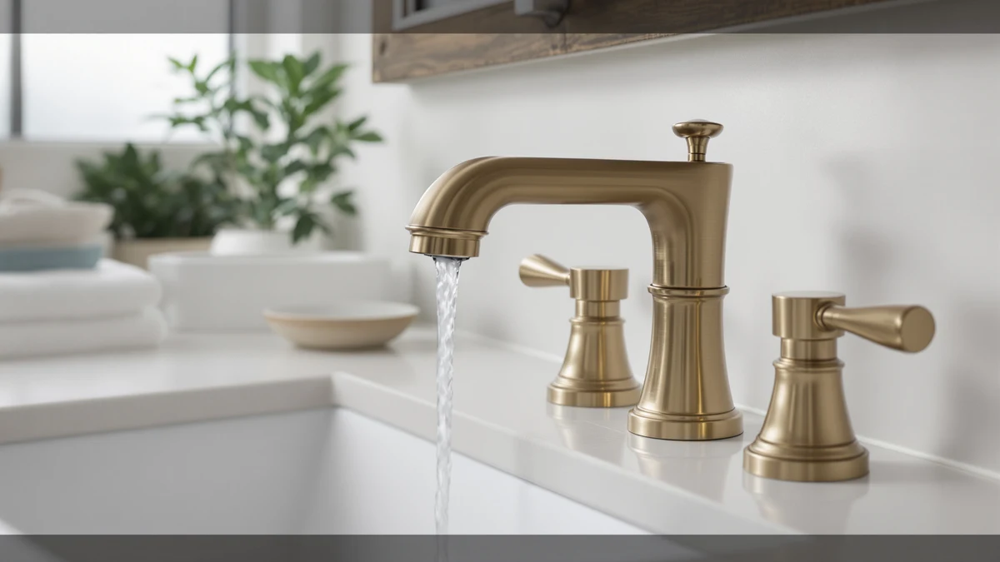

Moen TV6620 Brantford Widespread Bath Faucet Review (2026): Worth It?
Prices and picks verified as of November 2026. Independent, reader-supported reviews.


Quick Answer
The Moen TV6620 Brantford widespread bath faucet is a chrome, 3-hole sink faucet that ships with its own valve and adjusts from 8 to 16 inches of handle spacing, which covers most widespread vanity cutouts without a separate valve purchase. At $166.99 it lands in the middle of the widespread faucets we compared, and it's the pick to start with unless your vanity calls for a different finish or a different price range.
Our pick: Moen TV6620 Brantford Widespread Bath — $166.99 Check Price on Amazon
Bottom line: our top pick is the Moen TV6620 Brantford Widespread Bath Faucet at $166.99.
Things to Know Before You Buy
- The Moen TV6620 Brantford widespread bath faucet is sold for lavatory sinks and vanities only, not for tubs or tub and shower systems.
- It includes the widespread valve components needed for installation, so you aren't buying a separate valve kit on top of the $166.99 faucet price.
- Handle spacing adjusts from 8 to 16 inches, which fits most 3-hole widespread cutouts without custom plumbing work.
- It ships in chrome only, so if you want a different finish you'll need one of the alternatives covered below.
- Amazon doesn't list a star rating or review count for this faucet yet, so we can't cite buyer feedback on long-term durability.
This Moen TV6620 Brantford widespread bath faucet review compares its specs, price and finish options against three other widespread faucets to tell you whether it earns a spot on your vanity. Moen built the TV6620 as a dedicated lavatory faucet, not a tub or shower fixture, and priced it at $166.99 with the valve included. We researched the listing details, the included hardware and the pricing of three Delta alternatives to see where the Brantford actually stands out and where it falls short.
We based this review on Moen's published spec sheet, the current Amazon price and the valve and installation details in the product listing, since the faucet doesn't yet carry a public star rating or review count to compare against. That absence matters for a buying decision, so we're upfront about it rather than guessing at a number. For most widespread vanity installs the Moen TV6620 Brantford is a straightforward, chrome-only option, and we researched three Delta alternatives below for buyers who want a different finish, a shower valve instead of a sink faucet, or a lower price.
Why You Should Trust Us
Ilane Tall researches bathroom fixtures for Best Bathroom Faucets, comparing manufacturer spec sheets, current Amazon pricing and patterns in verified owner reviews before any widespread bath faucet earns a spot on this site. For this Moen TV6620 Brantford widespread bath faucet review, we pulled the listed dimensions, included hardware and price directly from Moen's product data and cross-checked them against three competing widespread faucets from Delta.
We do not run a fake testing lab, and we do not claim to have installed or used any faucet covered here. Our research model relies on manufacturer documentation, publicly listed pricing and, where it exists in our product data, the patterns reviewers report after buying and installing a faucet themselves.
That approach means we can tell you what Moen's listing promises and how the TV6620's price and included hardware compare against its alternatives, and we flag it clearly whenever a rating or review count isn't available instead of filling the gap with a guess.
Our Research Process
Our research process for this Moen TV6620 Brantford widespread bath faucet review started with Moen's own product documentation: material, finish, valve type, handle spacing range and included hardware. We compared that data against three other widespread faucets available at a similar price, then checked current Amazon pricing for each to see how the TV6620 stacks up on value.
Amazon doesn't list a star rating or review count for the TV6620 at the time of writing, so we couldn't weigh verified owner feedback for this particular faucet the way we do for some of its alternatives. Where a rating or review count exists in our product data for a competing model, we note it; where it doesn't, we say so instead of guessing.
We also checked what each alternative is actually built for. Two of the three Delta products we compared against the Brantford are shower valve and trim kits rather than sink faucets, so part of our research involved confirming which alternatives are a true swap and which ones only make sense if you're renovating more than the vanity.
Overview & Specs

Moen TV6620 Brantford Widespread Bath
What we like
- Includes the widespread valve components, so you don't need to buy a separate valve kit
- Handle spacing adjusts from 8 to 16 inches, covering most standard widespread cutouts
- Chrome finish from an established plumbing brand at a mid-range $166.99 price
Flaws but not dealbreakers
- Available in chrome only, so it won't match a brushed nickel or matte black vanity
- Built strictly for sink use, so it can't double as a tub or shower fixture
- No star rating or review count listed yet, so there's no verified buyer feedback to weigh
| Material | Brass + finish |
| Size | — |
The Moen TV6620 Brantford widespread bath faucet is built specifically for lavatory sinks and vanities, and Moen's listing is explicit that it isn't meant for tubs or tub and shower systems. That focus keeps the design simple: a single spout and two handles that spread across a standard 3-hole countertop cutout, in chrome only.
Moen includes the widespread valve components in the box, which matters because some widespread faucets make you source a compatible valve separately. The handle spacing adjusts from 8 to 16 inches, so it fits a wider range of pre-drilled vanities than a fixed-spread faucet would. At $166.99, it sits in the middle of the price range for the widespread faucets we compared, and the included valve helps offset the cost of a separate purchase.
What We Liked
The biggest practical advantage of the Moen TV6620 Brantford widespread bath faucet is that the valve ships with it. Several widespread faucets on the market list the valve as a separate purchase, which can add $30 to $60 to the real cost of the installation, so bundling it into the $166.99 price is a real value point.
The 8 to 16 inch adjustable handle spacing is the other detail worth calling out. A lot of widespread faucets ship with a single fixed spread, usually 8 inches, which only works if your vanity's holes line up at that exact distance. Moen's adjustable range covers both older 8-inch cutouts and the wider spacing common on newer vanities, so you're less likely to run into a mismatch at install time.
Price is another area where the Moen TV6620 Brantford widespread bath faucet holds up against the alternatives we researched. At $166.99 it undercuts both the Delta Nicoli sink faucet at $199.00 and the Delta Arvo matte black shower set at $186.00, while landing a few dollars above the Arvo brushed nickel shower set at $169.00. Since the Brantford's price already covers the valve, the gap to the Nicoli widens once you account for what a separate valve purchase would add to a faucet that doesn't include one.
What Could Be Better
Moen sells the TV6620 Brantford in chrome only, at least in the listing we reviewed. If your vanity hardware is brushed nickel or matte black, you'll need to look elsewhere, which is where an alternative like the Delta Nicoli in champagne bronze below might fit better.
The listing also doesn't carry a star rating or review count at the time of writing, which means we can't point to verified owner feedback on how the finish holds up over time or whether the included valve has a track record of reliability. That's a gap worth knowing about before you buy, not a flaw we're inventing.
Who Is It For?
The Moen TV6620 Brantford widespread bath faucet fits buyers replacing a 3-hole vanity faucet who want a chrome finish and don't want to shop for a separate valve. The adjustable 8 to 16 inch spacing makes it a safer bet if you're not completely sure of your cutout spacing ahead of ordering.
It's not the right pick if you need a finish other than chrome, or if you're outfitting a tub or shower, since Moen specifically scopes this model to lavatory sinks. Buyers who want verified owner reviews before committing may also want to weigh the Delta Nicoli alternative below, since Amazon's listing data for the TV6620 doesn't yet include a rating.
If your project is actually a shower renovation rather than a vanity swap, neither the Moen TV6620 Brantford nor the Nicoli is the right category of product. The two Delta Arvo sets covered below are shower valve and trim kits, not sink faucets, so they fit a different line item on a remodel than this review's main pick.
Alternatives to Consider
If the chrome-only Moen TV6620 Brantford widespread bath faucet doesn't match your vanity or your budget, these three Delta options cover different finishes and price points we compared against it.

Also Great
Delta Arvo 14 Series Matte
A matte black shower valve and trim kit, not a sink faucet, so it only replaces the Brantford if you're also redoing your shower. The included MultiChoice universal valve and In2ition 2-in-1 head make it worth the $186.00 price for that specific job.
$186.00
Check Price on Amazon
Premium Choice
Delta Nicoli Brushed Gold Faucet
The closest true alternative to the Brantford: a champagne bronze widespread sink faucet built for the same 3-hole, 4 to 16 inch cutouts. At $199.00 it costs more, but Delta rates the valve cartridge for 500,000 uses and includes a push-pop drain assembly.
$199.00
Check Price on Amazon
Also Great
Delta Arvo 14 Series Brushed
A brushed nickel version of the same Arvo shower valve and trim kit, with the same In2ition dual shower head as the matte black option. At $169.00 it's the cheapest of the three alternatives, but like its matte black sibling, it replaces a shower fixture, not a sink faucet.
$169.00
Check Price on AmazonIs the Moen TV6620 Brantford widespread bath faucet worth $166.99?
For a 3-hole vanity that needs a chrome finish, yes.
Does the Moen TV6620 Brantford come in finishes other than chrome?
Not in the listing we reviewed.
Frequently Asked Questions
Is the Moen TV6620 Brantford widespread bath faucet worth $166.99?
Does the Moen TV6620 Brantford come in finishes other than chrome?
Can I use the Moen TV6620 Brantford for a tub or shower?
Final Verdict
This Moen TV6620 Brantford widespread bath faucet review comes down to fit and finish more than a dramatic feature gap. Moen earns the pick here because the TV6620 bundles the widespread valve into its $166.99 price and adjusts across an 8 to 16 inch handle spread, covering more 3-hole vanities than a fixed-spread faucet would. If chrome isn't the finish you need, or you'd rather buy a faucet with a published star rating, the Delta Nicoli widespread alternative above is the one to compare it against before you order.